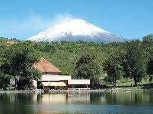
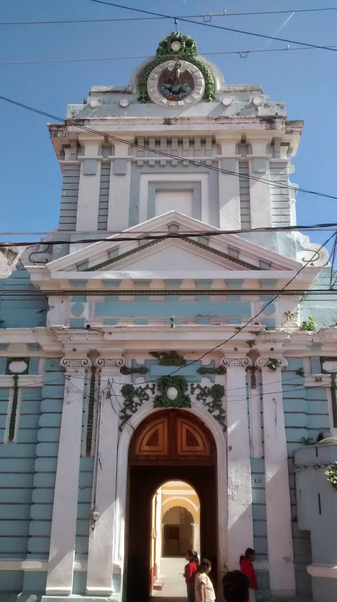
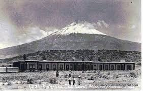
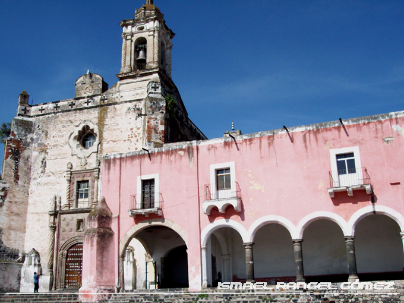

Se ubica a 25 km de la ciudad de Puebla, capital del Estado y cuenta con dos importantes vías de acceso: la Carretera Federal 190 y la moderna Autopista Vía Atlixcáyotl.

Actualmente, es una moderna ciudad con más de cien mil habitantes, que ha logrado armonizar su desarrollo urbano con el majestuoso legado de arquitectura colonial que dejaron sus fundadores (1579), y que hoy es uno de los principales atractivos turísticos de este municipio.

Es el evento más importante a nivel estatal donde se reúnen las 11 regiones etnogeográficas con que cuenta el estado de Puebla, mágica reunión que muestra a los visitantes nacionales y extranjeros de la calidad y calidez de los atlixquenses, mostrando la riqueza de nuestra cultura y tradiciones a través de la danza y música de nuestro Estado.
El sábado previo al Festival Atlixcáyotl empiezan a llegar los indígenas de los 7 grupos étnicos de Puebla tales como los popolocas, otomíes, nahuas etc., quienes realizan un desfile que culmina en el zócalo con la elección de la Xochicíhuatl (mujer flor) y sus Xochipilme (florecitas) evento en el que se demuestra la capacidad de la mujer indígena dentro de sus comunidades, pero éste no se trata de un certamen de belleza, más bien es la trascendencia que tienen las enseñanzas tradicionales y formativas en cuanto a costumbres y modos de empleo dentro de su comunidad.
Exposición y venta de flores y plantas que tambien cuenta con la presencia de de diferentes expositores de insumos y productos relacionados con la industria floral. Esta expo se realiza a principios del mes de Julio.Tambien destaca la Feria de la Noche Buena en en su tercera emisión se logró una producción de un millón 600 mil plantas.
La Expo Flores y Plantas cuenta con un espacio de 2 mil 500 metros cuadrados para más de 150 expositores de la localidad y del interior de la república.

Como parte del impulso turístico que se pretende hacer en el municipio en todas las áreas, en este caso del turismo; siendo la Villa Iluminada uno de los eventos más fuertes en el año que logra atraer una gran afluencia de visitantes; así como una derrama económica considerable, es por ello dar la correcta difusión y promoción a nivel estatal y nacional.
Villa Iluminada” es una ruta urbana que resalta la belleza arquitectónica de la ciudad de Atlixco, embelleciéndola con luces coloridas de variantes tonos.

Durante más de 40 días. Las calles formarán un circuito de luz y color, vestidas de figuras y escenas alusivas a la navidad, las tradiciones y la identidad de la ciudad.
Las Fiestas de Reyes es una actividad que nació en Atlixco para el país. Su meta cumplida es que ninguno de los 40 mil niños de escasos recursos que tenemos en el municipio se quede sin recibir un juguete.
Las Fiestas de Reyes de Atlixco fueron consideradas por el Fondo de las Naciones Unidas para la Infancia, la UNICEF, y el DIF Nacional como uno de los 17 mejores proyectos de la república mexicana que destacan la respuesta a una amplia convocatoria a voluntarios, pues en los trabajos participan más de mil ciudadanos, servidores públicos y empresarios incluso del extranjero.
Dentro de las Fiestas de Reyes, el Festival de la Ilusión tiene el objetivo de despertar en los niños la imaginación y hacer que ellos inviten a los Reyes Magos a visitar Atlixco.
Este festival lleno de magia, música, colorido y fuegos piroctécnicos se realiza en la Plazuela de la Danza del Cerro de San Miguel, donde llegado el momento los pequeñitos lanzan sus globos al cielo con las cartas que dirigen a los Reyes Magos.
El Festival de la ilusión logra reunir a más de 5 mil asistentes, entre papás y niños, con lo que se convierte en un gran festival.
Voluntarios y empresas preparan con anticipación la llegada de los Reyes quienes recorren las principales calles de la ciudad acompañados de payasos, personajes animados y carros alegóricos perfectamente iluminados que aluden a temas infantiles.
Con una derrama económica superior a los 18 millones de pesos y una afluencia mayor a los 165 mil visitantes, del interior del estado poblano y de entidades vecinas, fue el saldo que dejó el proyecto Tapete Monumental de Flores que se instaló en la explanada del zócalo, con imágenes alusivas a la temporada de Semana Santa y al inicio de la primavera.
Entre los proyectos que inició el presidente municipal de Atlixco, Ricardo Camacho Corripio, para motivar la afluencia de visitantes a la región fue el Tapete Monumental de Flores, mismo que se realiza con motivo de la temporada de Semana Santa e inicio de la primavera en el mes de marzo, así como también, alusivo a la temporada de Día de Muertos (en noviembre).
Desde hace ya tiempo, nuestra ciudad se ha dado a conocer por la exquisita cecina que se puede encontrar por los pasillos del mercado y en algunos restaurantes de la ciudad. Esta forma de preparar la carne de res posee el sabor de Atlixco, que por su delgadez es perfecta para servir en una tortilla acompañada de aguacate, queso, crema y una rica salsa.
La carne de borrego hecha en barbacoa es uno de los estilos de popularidad en el centro del país. Elaborada dentro de la tierra con hojas de maguey alcanza su mejor punto en sabor; lo puedes preparar en taco o simplemente con una rica salsa y aguacate. No olvides el consomé que se produce al cocinar la barbacoa.
Delicioso mole dulce representativo de Puebla, está hecho a base de varios chiles y condimentos, agregando una caricia de chocolate. Su consistencia espesa se acompaña comúnmente de una pieza de guajolote o pollo y se agrada a la vista decorándolo con ajonjolí tostado.
* Metepec: Donde se ubica el centro vacacional del IMSS.

*San Baltazar Atlimeyaya : Excelente opción para disfrutar de deliciosas truchas preparadas en sus restaurantes campestres.
CERRO DE SAN MIGUEL:También conocido como Popocatica (cerro que humea) o Macuilxochitpec (cerro de las cinco flores), es el lugar en donde se realiza la fiesta máxima de Atlixco que se lleva a cabo el último domingo de septiembre y para la que se reúnen los representantes de las once regiones culturales de Puebla. Pero aunque tu visita no coincida con la fecha, el lugar te ofrece una maravillosa vista panorámica y siempre puedes visitar la Capilla de San Miguel.

Ex Convento del Carmen:Es una de las construcciones religiosas más antiguas de la ciudad. Data del siglo XVI y fue fundada por la Orden de los Carmelitas.
Su distribución original contaba con un par de claustros, una iglesia y una pequeña huerta, convirtiéndolo en uno de los complejos arquitectónicos más grandes de Atlixco.
A lo largo de la historia, el ex convento funcionó como albergue para peregrinos, cuartel militar y Palacio de Justicia. Hoy en día, alberga un pequeño museo de piezas arqueológicas y es foro de distintas actividades culturales.
*Zócalo:Una vuelta por el zócalo es una experiencia inolvidable, saboreando los ricos helados y sorbetes que venden cerca de allí, así mismo entrar a algún restaurante para degustar la cecina atlixquense, el guacamole, el consomé Atlixquense, o las truchas en sus diferentes modalidades. A tan solo una cuadra del centro, en el mercado encontrarás tortillas hechas a mano, expendios de cecina, tlacoyos, quesos frescos de la región o si eres de "gustoso paladar" podrás comer los originales chapulines fritos con sal y limón.

En el año 1100 el valle de Atlixco se hallaba ocupado por pobladores de origen Teochichimeca, Chichimeca y Xicalancas que bajo el dominio de la gran Tenochtitlan, se asentaron primeramente al poniente del cerro de San Miguel, hoy Solares Grandes

Estos primeros pueblos fundaron así Quaquechollan (Águila que huye) y que tiempo después llamaron Acapetlahuacan, "Lugar de división del señorío".
Su posición geográfica hizo que fuera escenario de luchas entre los diversos grupos indígenas que estaban asentados en los alrededores. Los pueblos de Calpan, Huejotzingo y Cholula se disputaron en diversas épocas la posesión del valle, que a la llegada de los españoles se encontraba bajo el dominio de Huejotzingo

Hacia 1420 se sostuvieron guerras entre los pobladores de Calpan y los Huejotzincas, quienes finalmente vencieron a los primeros obligándolos a emigrar al sur, donde actualmente es Huaquechula.

A fines del siglo XVI (1581) por la necesidad Que había de un hospital, ya que la villa crecía cada vez más. Un sacerdote cedió su casa para fundar el primer hospital de la villa.
El hospital de Atlixco les fue entregado en 1731 y el personal Que llego de México consistía en un Hermano Mayor, un Capellán y seis religiosos, entre ellos un doctor, Se hizo un nuevo hospital al sur de la ciudad, costeado por P. Antonio Franco con tal suntuosidad que se consideraba "el mejor hospital del Obispado".
Se atendían 30 enfermos como mínimo, sosteniendo el hospital de limosnas de a Parroquia, legados y propiedades.
A fines del siglo XVIII se noto una franca decadencia en el Hospital, que amerito la intervención del Obispo de Puebla que les retiro las rentas del hospital. Los Juaninos, inconformes con esa decisión, apelaron en varias ocasiones a la autoridad episcopal, pero al no obtener respuesta, pasó el asunto al Virrey que les dio la razón devolviendo la administración a la orden religiosa en 1783.
Ubicación: Parque de la soledad, al pie del Cerro de San Miguel.
Construida a mediados del siglo XVIII.
Esta dedicada a San Diego de Alcalá.
Es una iglesia de nave baja con crucero, la fachada original fue neoclásica.
Después de un incendio la fachada fue modificada y revestida de pedazos de mármol blanco, rosa y gris.
De lado derecho a lado de un angel de concreto existe una placa que dice “La restauración de la iglesia fue costeada por Erasmo Martínez. 1950”
Esta capilla se construyo en el siglo XVIII, se encuentra ubicada en la cima del cerro de San Miguel.
Esta fiesta llega a coincidir con la fecha del Atlixcayotl (último domingo de septiembre), pero hay que recalcar que son dos eventos totalmente diferentes.
Su construcción es de tipo popular y muy pintoresca, consta de una puerta de madera grande, ventana, un nicho, todo encuadrado por dos contrafuertes y pintada en amarillo y blanco por vieja tradición.
La Capilla se encuentra en una explanada cuya barda de aproximadamente un metro de alto permite ver la Ciudad y todo el valle de Atlixco. El su interior se conserva un retablo neoclásico al fondo y un púlpito en piedra muy primitivo. Cada 29 de septiembre la Capilla de San Miguel recibe a cientos de fieles que acuden con motivo de la fiesta del Arcángel San Miguel y disfrutan de la romería y antojitos típicos de la región.

Ubicada en Av. Independencia y 3 Poniente
Esta Iglesia esta dedicada a Santa Cecilia.
Fue fundada por Fray Juan Adriano entre 1589 y 1593.
Es la tercera fundación del clero en la Villa de Atlixco y la fundación de su convento se hizo en la última década del siglo XVI, bajo la encomienda de Fray Melchor de Vargas; la misión de los agustinos no fue la de evangelizar indios, sino la de presentar a su orden y auxiliar en sus devociones a los habitantes criollos de este municipio.
Tiene tres accesos al patio y sus portadas son un claro ejemplo del barroco popular
La entrada Central se encuentra en esquina, es la más importante y podemos apreciar una escultura de San agustin como remate y la frase de alabanza a la virgen Maria "GLORIA TIBI-TRINITAS"
El Interior de la Iglesia es de una sola Nave de proporción angosta y alta con crucero y cúpula.
En los muros del sobreclaustro se encuentran repintados, El Bautismo, La Conversión y la Sepultura de San Agustín por Nicolás Rodríguez Juárez.
Este convento tuvo particular fama por la imagen del Santo Cristo milagroso el cual aun existe.
La segunda fundación de religiosos que tuvo lugar en Atlixco fue la de los carmelitas. Llegaron el 28 de septiembre de 1589.
Su arquitectura sobria y de gran sencillez relaciona este convento con el de San Ángel en la ciudad de México. La Iglesia y Convento del Carmen debió ser el edificio religioso más importante de Atlixco. Limitado por enorme barda, abarca aproximadamente dos manzanas, comprendió como todos los edificios de la misma orden un claustro pequeño, uno o dos claustros grandes, huerta, dependencias e iglesia anexa a todo el convento.

La construcción del Convento y su Iglesia data de 1600 a 1620. La Iglesia esta orientada de norte a sur, a este lado la fachada principal. Flanqueada por dos contrafuertes, es un ejemplo del estilo barroco de la primera mitad del Siglo XVII. La puerta alta y estrecha, está enmarcada por dos pilastras almohadilladas, en el entablamiento una inscripción: “SOLI DEO HONOR & GLORIA”.

Ubicada en: 3 Norte 404 Los Mercedarios en 1612 Fundan este convento dedicado a la Visitación de nuestra Señora de la Merced.
La Iglesia se levanta al centro de la calle y junto con el convento debió ocupar, la mayoría de la manzana, la fachada es un muro almenado y dos grandes portadas coronadas por un nicho.
La fachada de la iglesia magnífica obra maestra del barroco Atlixquense de principios del S. XVIII. Con dos cuerpos, el primero con cuatro columnas salomónicas que encuadran dos nichos. Al centro la puerta en forma de arco trolobulado con bella ornamentación que incluyen palmeras y cabezas de Ángeles en las enjutas; en la puerta un Espíritu Santo a arriba en medio de follajes de vides y racimos el Niño Jesús. Los santos de los nichos son dos mercenarios: un rey y un obispo, ambos con carteles en la mano, otras cartelas alineados a los nichos, ligan el cuerpo bajo, el cuerpo superior vemos cuatro columnas salomónicas y, al centro la Virgen de la Merced, unos Ángeles abren su manto el cual protege a un Rey, un caballero, un papa y un cardenal.
La primera parte de la construcción estuvo a cargo del fraile Toribio de Motolina, la traza arquitectónica estuvo a cargo del fraile Juan Alameda.
Aunque se le conoce con el nombre de San Francisco (por ser construido por frailes franciscanos) realmente se llama Santa María de Jesús.
Se encuentra ubicado a un costado del cerro de San Miguel lo que permite admirarlo desde la parte sur del valle.
El convento se compone de iglesia, claustro alto y bajo, dormitorios y huerta, con una sola arca de ingreso formada por dos vanos con arcos irregular, determinado por la naturaleza misma del terreno, circundado por un barda que no es la original donde se alternan nicho para la oración del Vía Crusis. La fachada de la iglesia flaqueada por contrafuertes escalonados dispuestos en ángulo, la portada constituida por dos cuerpos rectangulares estilo mudéjar, ricas ramas estilo gótico.
El segundo cuerpo esta compuesto por una ventana coral, medallones que contienen los anagramas de Cristo y de María, en el centro uno con el escudo Franciscano con las cinco llagas, una línea de cruces de tipo griego de brazos iguales formadas en tezontle negro coronan todo el edificio con once que se ven al frente, este detalle característico es único en construcciones similares de la misma época, la torre es posterior.
Este majestuoso templo parroquial renacimiento español, se comenzó a construir a principios en el año 1644 por orden del excelentísimo Sr. Don Juan de Palafox y Mendoza, con dos valiosísimos altares churriguerescos con una decoración magnífica además cuenta con las valiosas pinturas de el Vía Crucis de Cabrera y cuadros de Berruecos y Morales.
Esta dedicada a la Natividad de nuestra Señora (Divina Infantita)
Originalmente fue abierta para la atención espiritual de los españoles.
Destaca en la fachada el ESCUDO REAL DE LA CORONA ESPAÑOLA DEL SIGLO XVII
Elaborado por manos indígenas con destreza e inteligencia y guiados por sacerdotes españoles en el año de 1644, cuando son los inicios la construcción de la Parroquia de Sta. Maria de la Natividad y finalizó la obra en el año de 1770.
La iglesia de Santa Clara constituye, con El Carmen y San Francisco, las tres construcciones conventuales mas importantes que ha conservado la Ciudad de Atlixco. La fachada de la iglesia esta alineada a lo largo de la calle que llevaba el mismo nombre y, que actualmente se llama la Libertad, viendo al poniente; sucesivamente vemos la fachada del convento, la torre y las y las dos portadas iguales, típica disposición de los monasterios de monjas, enmarcando la puerta de entrada en la parte baja cuatro columnas corintias, otras cuatro en la parte alta.
Un rincón frontón, mutilado, corona esta portada; el espacio de la puerta central, debió contener una escultura.
La torre es de sección octagonal con columnas salomónicas encuadrando los ventanales. Lo mas bello de todo el conjunto es la cúpula, media naranja poblana con tambor, con ventanas adornadas con pilastras, frontones mensulas y cornisas.